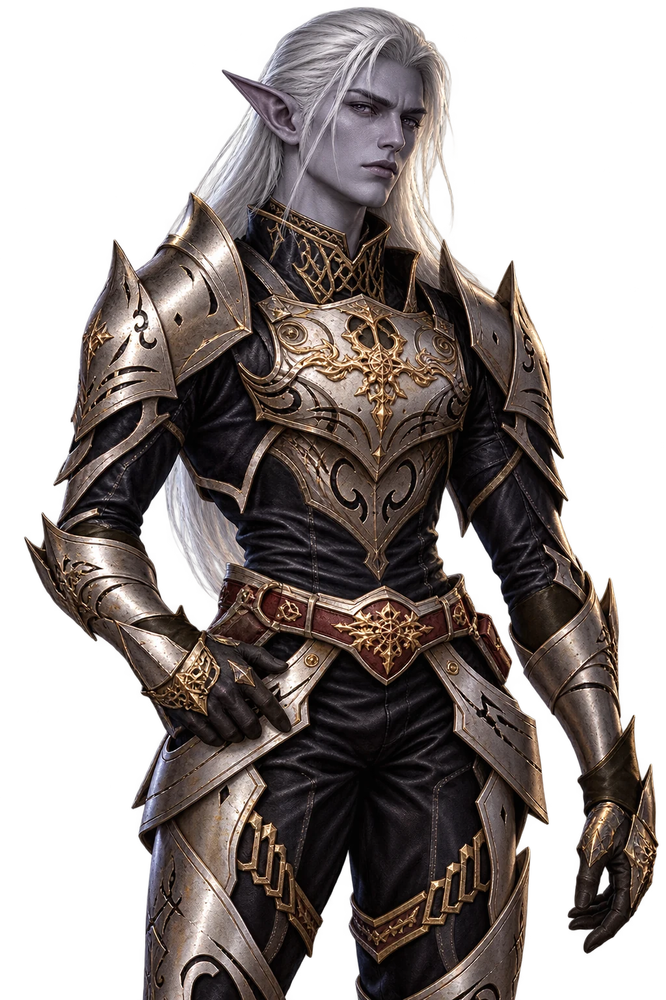
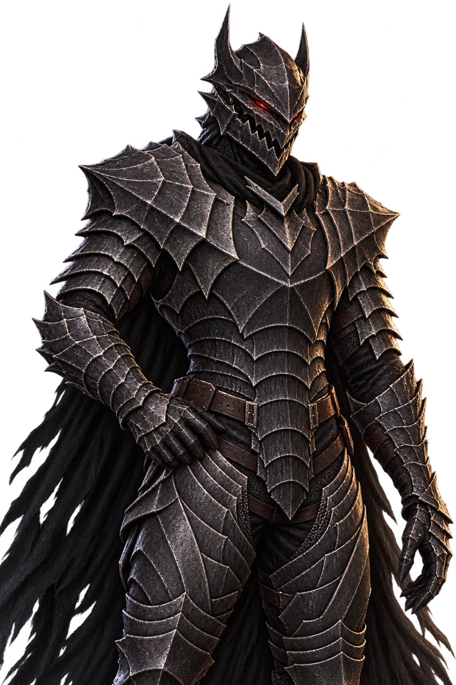
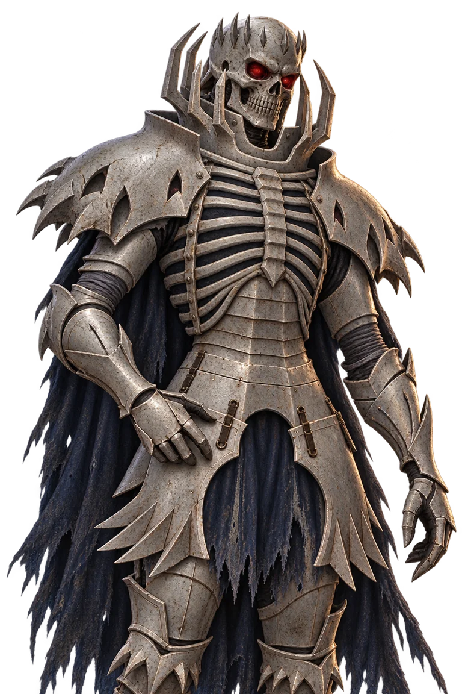
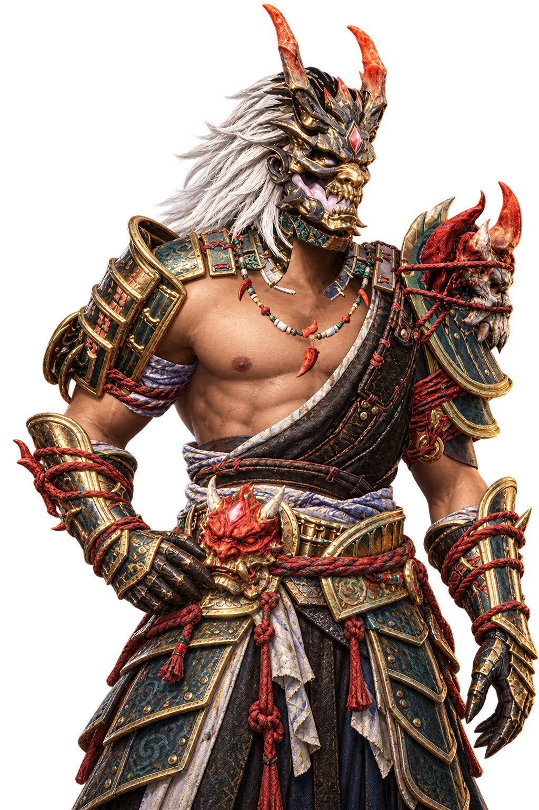
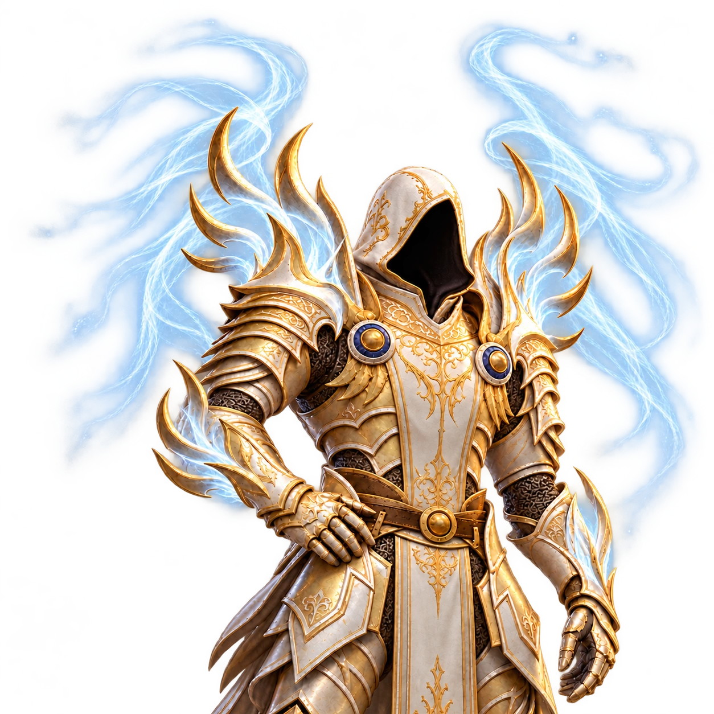

DARK ELF · 01
DOOM LIGHT
둠 경갑 · 다크엘프
은백색 헤어, 날카로운 인상.
어둠 속에서도 빛나는 존재감.
고스트와 함께하는 발헤임
다섯 가지 외형과 일상을 바꾸는 편의 기능.
설치부터 업데이트까지, Ghost r2 하나로.





얼굴부터 갑옷, 망토까지.
당신의 모험에 어울리는 모습을 선택하세요.
은백색 헤어, 날카로운 인상.
어둠 속에서도 빛나는 존재감.
거친 갑주와 압도적인 실루엣.
전장의 가장 깊은 곳으로.
백골 갑옷에 새겨진 위압감.
잊히지 않을 전설의 형상.
붉은 뿔과 은백색 갈기.
금빛 갑주에 깃든 강렬한 존재감.
흰 갑주를 감싸는 푸른 빛.
등 뒤로 펼쳐지는 대천사의 날개.
반복되는 조작과 기다림을 덜어내고,
탐험에 더 집중하세요.
저장한 부위만 바꾸는 장비 교환.
다른 장비는 그대로 유지합니다.
제련소·용광로·숯가마의 기본 생산 시간 1초.
원료·연료 한도는 100개, 세부 값은 F1에서.
일반 활 당김 속도 2배와 9발 강공격.
숙련도 효과와 화살 소모 규칙을 함께 반영합니다.
외형부터 생활 편의까지, 모든 기본 모드를 함께 설치합니다.
설치가 막히거나 궁금한 점이 생겼다면.